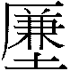
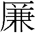
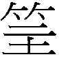
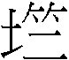

15 謙卦 地山謙
謙，亨，君子有終。初六，謙謙君子，用涉大川，吉。六二，鳴謙，貞吉。九三，勞謙，君子有終，吉。六四，无不利，撝謙。六五，不富以其鄰，利用侵伐，无不利。上六，鳴謙，利用行師，征邑國。
【卦名】
今本：謙 帛書：嗛 歸藏：兼 秦簡：陵 上博簡： 清華簡：謙 帛書易傳：嗛或溓 海昏：溓
謙為謙卑、謙虛、敬慎之義。
鄭康成：「謙者，自貶損以下人，唯艮之堅固，坤之厚順，乃能終之。故君子之人有終也。」
帛本《周易》作「嗛」，嗛與謙通。《子夏傳》也作「嗛」，注曰：「嗛，謙也。」《說文》：「謙，敬也，从言兼聲。」段注：「謙或假嗛為之。」《集韻》：「或作嗛。」《前漢．藝文志》「易之嗛嗛」顏師古註：「與謙同。」
帛本易傳作嗛或溓，溓應是謙之假借。
、陵、廉
秦簡作陵，上博簡作，陵通，兩字亦與「廉」字互通。廉陵，即廉潔、清高、守本份之義。
為之繁化。楚簡中類似例子相當多，如上博簡大畜作「大」，或作，為「竺」的繁化，通竺。則是字加上土字邊的繁化，通廉，亦為廉之異體字。
陵則是棱的假借，或作稜，亦通廉，或并稱「廉棱」、「廉陵」。《說文》广部段注：「廉之言斂也，堂之邊曰廉。天子之堂九尺，諸侯七尺，大夫五尺，士三尺，堂邊皆如其高。賈子曰：廉遠地則堂高，廉近地則堂卑是也。堂邊有隅有棱，故曰廉。廉，隅也。又曰：廉，棱也，引伸之為淸也、儉也、嚴利也。許以仄晐之，仄者，圻咢陖陗之謂。今之筭法謂邊曰廉，謂角曰隅。」《六書正譌》：「離鹽切，稜也。从厂，石之稜隅也。又厲石兼聲，又足脛外隅亦曰，蓋借義也。《說文》作廉从广，無義，傳寫之譌也。」
廉原本是廳堂的側邊，同時也是堂室最高的地方。在廉的地方有隅有棱，因此廉與隅、廉與棱經常並稱且相通，取其有稜有角來形容人之行事不踰越本份，廉潔、清高，有品格。
隅為角落，而棱則是屋頂最高處的四角木頭，《說文》：「棱，柧也。」「柧，棱也，从木瓜聲。又，柧棱，殿堂上最高之處也。」段注引《通俗文》曰：「木四方為棱，八棱為柧。」夌之言高、越也，所以高地曰陵，棱即高角木。
《禮記．喪大記》「堂廉楹西」疏：「堂廉，謂堂基南畔廉陵之上。」〈聘義〉「廉而不劌，義也」疏：「廉，稜也。劌，傷也。言玉體雖有廉稜，而不傷割於物，人有義者，亦能斷割而不傷物，故云義也。」〈儒行〉「近文章，砥厲廉隅」疏：「言儒者習近文章，以自磨厲，使成己廉隅也。」〈樂記〉「哀以立廉」疏：「廉，謂廉隅。以哀怨之，故能立廉隅，不越其分也。」
卦象下艮山為高為陵，上坤地為方，高而方者，廉棱之象也。
兼
《歸藏》卦名作兼，兼為兼併之義。另一方面也可借作謙及廉。
兼可能是謙卦最早的古卦名，王寧即持此看法，並認為「兼」在古時有兩種不同的讀音而演變出兩種不同讀音的文字，〈秦簡《歸藏》幾個卦名補釋〉：
疑謙卦本作「兼」，「兼」字古當有古甜切和力鹽切兩個讀音，前者為牙音的見紐，故「縑」、「歉」、「謙」、「嗛」等字均從「兼」聲為牙音字；後者為舌頭音的來紐，故「廉」、「鐮」、「熑」、「磏」、「鬑」、「螊」等字均從「兼」聲而為來紐的舌頭音字。
王寧這個看法是相當有可能的，因為綜觀《周易》卦名所用的文字，所用的是非常原始而比較具有「字根」義的文字，如艮、兌、夬…。兼之於謙就如兌之於說。
卦名使用這類文字有其道理。首先就文字的發展來看，筮法是極為古老的宗教預測系統，所以使用的文字古老而原始是其必然。假設一個字在甲骨文或金文中找不到，那麼就要受到合理懷疑，可能另有其字。反之，若該字甲骨文或金文中有，那麼就比較可能是本字。
其次，這類字更為符合占卜、占筮等神明預測的需求，因為可「一語多關」的多面向解釋。例如，兌可通悅、說、敓（奪）、閱、脫、稅、蛻、銳…。而夬可通快、缺、訣、決、玦、抉……同樣的，兼可通謙、嗛、傔、溓、廉…。
相較之下，兼字比其他字還要古老並具有字根義。
《說文》：「兼，并也，从又持秝。兼持二禾，秉持一禾。」兼的形構為一手持兩個禾束，兼并之義，有別於秉之一手持單一禾束，為秉持之義。卦象下艮手，上坤為多，象手持者眾，亦符合「兼」取之義。
兼除了做兼具、兼備使用，古文中經常用的就是「兼併」，例如《左傳》宣公十二年及《書．仲虺之誥》：「兼弱攻昧，取亂侮亡。」「兼弱」指的是兼併弱國。《左傳》襄公二十九年「兼國多矣，誰得治之」，言兼併的國家很多。
再就卦象看，下艮為手，取之義。上坤為邦國，合起來就是取他人之邦國，亦符合兼併之義。再以此字義看經文，六五「利用侵伐」，上六「鳴謙，利用行師，征邑國」等文字就相當合理。傳統以謙虛來解釋，但這兩段經文內容與「謙」的品德顯然是格格不入的，因此易學家總是做很多解釋以自圓其說。若卦名為兼，那麼這些經文都是相當理所當然而順理成章。
總觀本卦，最為原始的卦名以「兼」最為可能。兼除了作兼併解，同時也可以用以假借做今本的謙（嗛），或是出土竹簡的廉棱，同時在後來的發展中演變成「謙」做為卦義。
【卦義】
山在地下，高而不踰越，謙卑、廉正之義。
朱熹：「 謙者，有而不居之義。止乎內而順乎外，謙之意也。山至高而地至卑，乃屈而止於其下，謙之象也。」鄭玄：「山體髙，今在地下。其於人道，高能下下，謙之象。」
謙卦卦象為山崇高而居於地下，地氣從低處而上行，因謙卑而崇高之義。山艮止於內而收斂不發，坤柔順在外以待人，為君子謙卑以自牧，柔順以處世之象。《彖》曰：「天道下濟而光明，地道卑而上行。」「天道」指的是九三，但九三如何「下濟」？虞翻曰：「乾上九來之坤，與履旁通。天道下濟，故亨。」謙為乾卦與坤旁通而成，乾上九至坤三而成謙，坤六三至乾上而成夬。夬者缺也，所以彖傳緊接著說「天道虧盈而益謙，地道變盈而流謙」。「天道虧盈」指的是乾體變夬之象。
下艮山為陵（通棱），上坤地為方，高而方正，廉棱之象，廉棱者廉潔方正而不踰矩也。
卦序上謙卦為繼大有而來，大有為富有天下，富而驕則不仁，因此卦序以謙繼大有，告戒富有之人不可自滿，應該以謙卑自養，自損以益人，《序卦》說：「有大者不可以盈，故受之以謙。」《象傳》說：「君子以裒多益寡，稱物平施。」
雖然謙卦為大吉之卦：卦辭說亨，初六說吉，六二說貞吉，九三吉，六四無不利，六五無不利，上六利用行師、征邑國，表面上幾乎是易經六十四卦中的超級上上籤，但要注意，謙卦之吉，在於能夠謙虛自牧，正如《彖傳》所揭示的：謙受益，滿招損。
但為何卦辭無一吉字？孔穎達這麼說：
謙為諸行之善，是善之最極，而不言元與利貞及吉者，元是物首也，利貞是幹正也。於人既為謙退，何可為之首也？以謙下人，何以幹正於物？故不云元與利貞也。謙必獲吉，其吉可知，故不言之。凡《易經》之體，有吉理可知而不言吉者，即此謙卦之繇及乾之九五「利見大人」，是吉理分明，故不云吉也。
古云「易為君子謀」，而《周易》具體的君子修身之道則在謙卦講的最多與最具體。所以謙卦卦辭說「謙，亨，君子有終」，初六《象》曰「謙謙君子，卑以自牧也」，《彖傳》說「尊而光，卑而不可踰，君子之終也」。
謙與豫為彼此相綜的一對卦，也可視為儒家禮樂精神的體現。豫為樂，謙為敬。謙與履（禮）兩卦旁通，為禮之表裡，所謂禮尚謙，謙以制禮。兩者一虛一實，謙者虛心自養，履者實踐履行，《繫辭傳》曰「履德之基也，謙德之柄也」，「履和而至，謙尊而光」，「履以和行，謙以制禮」。
謙傳統解釋為謙卑，但為何六五說利用侵伐，而上六說利用行師，朱熹認為謙乃用兵之道，有以退為進之義。《朱子語類》：
問：謙是不與人爭，如何？五上二爻，皆言「利用侵伐」，「利用行師」。曰：老子言：「大國下小國，則取小國。小國下大國，則取大國。」又言：「抗兵相加，哀者勝矣。」大抵謙自是用兵之道，只退處一步耳，如必也臨事而懼，皆是此意。
有趣的是，《彖傳》注解中，一陽五陰的卦裡，唯獨謙卦沒有使用到「剛」字。朱熹弟子丘富國這麼說：「凡卦以一陽為主者，《彖傳》皆以剛言，復曰剛反，豫曰剛應，師比曰剛中，剝曰變剛。謙主九三，而《彖》不言剛者，謙無用於剛也，用剛則不能謙矣。三有剛而不用，此其所以為謙也。」丘富國意思為，一陽五陰之卦多以用剛為美，但這六卦中唯獨謙卦不言剛，因為謙卦之所以為謙，剛而不用。
謙，亨，君子有終。
- 彖曰：謙亨，天道下濟而光明，地道卑而上行；天道虧盈而益謙，地道變盈而流謙；鬼神害盈而福謙，人道惡盈而好謙。謙尊而光，卑而不可踰，君子之終也。
- 象曰：地中有山，謙，君子以裒多益寡，稱物平施。
- 《繫辭》：履，德之基也。謙，德之柄也。復，德之本也。恒，德之固也。損，德之脩也。益，德之裕也。困，德之辨也。井，德之地也。巽，德之制也。履，和而至。謙，尊而光。復，小而辨於物。恒，雜而不厭。損，先難而後易。益，長裕而不設。困，窮而通。井，居其所而遷。巽，稱而隱。履以和行，謙以制禮。
- 《序卦》：有大者不可以盈，故受之以謙。有大而能謙必豫，故受之以豫。
- 《雜卦》：謙輕而豫怠也。
- 帛書《二三子》：卦曰：「嗛，亨，君子有終，吉。」孔子曰：「…已亓卦上川而下根。川也根，精質也，君子之行也。……四吉焉。吉，嗛也。凶，驕也。天亂驕而成嗛，地徹驕而實嗛，鬼神禍福嗛，人亞驕而好嗛。□□□。四吉驕……好善不伐也。夫不伐德者君子也。亓盈如…壹舉而再說，亓有終也亦宜矣。」
- 帛書《繆和》：子曰：天之道，崇高神明而好下，故萬勿歸命焉。地之道，精博以尚而安卑，故萬勿得生焉。聖君之道，尊嚴敻知而弗以驕人，嗛然比德而好後，故□□□□ □。 易曰：溓，亨，君子又冬。
- 帛書《繆和》：子曰：嗛者，溓然不足也。亨者，嘉好之會也。夫君人者以德下其人，人以死力報之。其亨也不亦宜乎？
- 帛書《繆和》：子曰：天道毀盈而益嗛，地道銷［盈而］流嗛，［鬼神害盈而福嗛］，人道亞盈而好溓。溓者，一物而四益者也。盈者，一物而四損者也。故聖君以為豐茬，是以盛盈，使祭服忽，屋成加，宮成刊隅。溓之為道也，君子貴之。故曰：溓，亨，君［子又冬］。□□□□ □□下，非君子，其孰當之？
【今解】
謙卑而能夠亨通，君子能實踐到最後。
謙卦主爻為九三，九三為艮卦之成，艮卦又是成物終物之卦，《說卦》「終萬物始萬物者莫盛乎艮」，因此九三也說「君子有終」。
【字義】
君子有終：君子履行謙道自始至終，言君子能夠持續履行謙道。終字古文作「冬」，《說文》：「四時盡也，从仌从夂。夂，古文終字。」段注：「冬之為言終也。」在後天八卦圖以及清華簡《筮法》卦位圖中艮卦都居於東北，就一年四季來說正是一年結束的時節。清華簡卦位圖依「春生、夏長，秋收，冬藏」的農序排列四正卦，冬季為羅（離）及艮，並說：「奚古胃之羅？司臧，是古胃之羅。」離卦因司藏所以名為羅，而艮卦在羅之後，為一年之終（冬），艮之後則為震，為春，為一年之始。此即《說卦傳》說的「成言乎艮」、「終萬物始萬物者莫盛乎艮」，「艮，東北之卦也，萬物之所成終而所成始也，故曰成言乎艮。」謙卦主爻為九三，九三為下艮卦之成，因此說「君子有終」。虞翻「：君子謂三。艮終萬物，故君子有終。」
裒多益寡：君子因能夠謙虛，而多者益多，寡者亦可受益。裒，音掊。依《爾雅. 釋詁》，裒為聚，為多。孔穎達：「裒多者，君子若能用此謙道，則裒益其多，言多者得謙，物更裒聚，彌益多也。故云裒多，即謙尊而光也，是尊者得謙而光大也。益寡者，謂寡者得謙而更進益，即卑而不可踰也。是卑者得謙而更增益，不可踰越也。」裒虞翻解釋為取，與鄭玄同。裒多益寡為取多者以益寡者，有損多以益寡之義：「君子謂三。裒，取也。艮為多；坤為寡；乾為物，為施；坎為平。謙乾盈益謙，故以裒多益寡，稱物平施。」《釋文》：「鄭荀董蜀才作捊，字書作掊。」「鄭康成曰：捊，取也。荀董蜀才同。」《孫氏周易集解》：「唐宋石經皆作裦。 」
稱物平施：稱為度、量，亦有公平之義。稱物，度量物之輕重。平施，公平的施予萬物。益卦《彖傳》：「天施地生。」乾天作用在施予，謙為「天道下濟而光明」之卦，為乾卦上九至坤三而成，互體成坎為勞，因此謙九三曰勞謙。坎亦為公平之象，九三又與上六相應，與六二比應，因此為「平施」。
謙輕而豫怠：謙為虛故輕，豫為樂故怠。怠為怠慢之義，虞翻作怡：「豫薦樂祖考，故怡。怡或言怠也。」
初六，謙謙君子，用涉大川，吉。
象曰：謙謙君子，卑以自牧也。
【今解】
謙卑又謙卑的君子，可以涉水過大河，吉。
初六居於六爻最下面，是最為謙卑的一爻，也是打從內在本質就是謙虛的一爻。有謙虛的德性而又能以柔順居於最卑微的地位，所以說「謙謙」，謙虛又謙虛、謙卑再謙卑之象。君子能以謙虛來修養自己，培養自己的內涵，就算面對危險，亦能逢凶化吉。但反之，若是不能謙虛，則無以濟事。
此爻謙卑者吉，反之，高傲者凶。如涉水過河，知道危險、人力渺小，則反能安然渡過。而高傲者，以暴虎馮河的蠻勇，自以為人力勝天，就會遭至滅頂之災。
【字義】
謙謙君子：謙卑再謙卑的君子。初六以柔順處謙卦的最底下，為謙卑中的最謙卑者，所以說「謙謙」，而不獨言一個「謙」。
用涉大川：字面意思為君子以極為謙虛的態度可以徒手涉水過大河，大川比喻危險，用涉大川意味可以積極的冒險犯難。
卑以自牧：謙卑以自養。牧，養也。鄭玄：「牧，養也。」
六二，鳴謙，貞吉。
象曰：鳴謙貞吉，中心得也。
【今解】
這是唱和式的謙虛，貞定則吉。
性情柔和，而能與有能力的陽剛之人互相唱和，心悅誠服追隨賢能之士，貞正則吉。六二之謙虛，乃是唱和式的，不如初六之本質即謙卑，故初六曰「謙謙」，六二說「鳴謙」，鳴為唱和、呼應之意。六二居初之上，但柔得位而居中，有中正之德，又上承九三，因此為能唱和而謙者。
【字義】
鳴謙：鳴有許多種可能的解釋。一、求問。鳴為鳴叫，以鳴叫形容求問之急切。楊萬里：「是故號鳴諮詢，以講求謙之道。嗚者，講求之切也。」二、呼應、回應、唱和，取「鳴鶴在陰，其子和之」的意思。來知德：「荀九家以陰陽相應，故鳴，得之矣。」這是以六二與九三（勞謙之君子），也就是謙卦的主爻比鄰而應（六二承九三）。《禮記·樂記》：「叩之以小則小鳴，叩之以大則大鳴。」《莊子‧天地篇》：「金石有聲，不考不鳴。」以鳴為呼應，於義理上與易經剛柔承乘比應等原理相符。三、歡呼。程頤：「二以柔順居中，是為謙德積於中。謙德充積於中，故發於外，見於聲音顏色，故曰鳴謙。」朱震：「謙自初六，卑以自牧積其德，至於六二，柔順而中正，其樂發於聲音而不自知，故鳴謙。」初六為君子自養的初始階段，到六二突覺修練有成而不禁叫了出來。朱震強調，這純粹只是表達喜悅，無關乎尋找別人的回應。以鳴為「歡呼」，最能解釋象傳「鳴謙貞吉，中心得也」的意思。四、名聲、名譽。王弼：「鳴者，聲名聞之謂也。」孔穎達：「鳴謙者，謂聲名也。」朱熹：「柔順中正，以謙有聞，正而且吉者也。」高亨：「鳴皆當訓名。」所以「鳴謙」意指有「謙虛」之名聲、聲譽。
九三，勞謙，君子有終，吉。
- 象曰：勞謙君子，萬民服也。
- 《繫辭》：「勞謙，君子有終，吉。」子曰：「勞而不伐，有功而不德，厚之至也。語以其功下人者也。德言盛，禮言恭。謙也者，致恭以存其位者也。」
【今解】
辛勞的謙虛，君子可以有始有終，吉。
辛勤勞苦，苦行式的謙卑感化群眾，讓大家心服口服地追隨。如此吃苦耐苦、謙虛而不居功，又能持之以恒，有始有終，吉。
《繫辭》所引孔子說的那段話大意是：勞動而不自誇，有功而不居德，這是仁厚的極至，能夠有功勞而謙卑的居於人下。以德性來說可謂豐盛，以禮來說可謂恭敬，這是能以恭敬來保存其地位的人。
《說卦》：「帝出乎震，齊乎巽，相見乎離，致役乎坤，說言乎兌，戰乎乾，勞乎坎。」「坎者，水也，正北方之卦也，勞卦也。」九三為互體坎卦的中爻，坎為勞卦，所以說勞謙。
謙卦六爻各有不同的「謙虛」形態，初六為本質即謙者，曰謙謙。六二為與人相和而謙者，曰鳴謙，九三則是勞苦之謙，是以苦行來表現自己之謙虛者，所以象傳說「勞謙君子，萬民服也」。
《周易》「有終」之象有二，一是以艮為終，二是第三爻亦是「有終」之位。如乾九三「君子終日乾乾」，坤六三「无成有終」，謙九三「君子有終」，睽六三「无初有終」。
清吳曰慎認為六三應讀做「勞謙君子，有終，吉」：「諸儒皆以君子有終為句，然據初六謙謙君子，則此爻當勞謙君子為句，《象傳》明矣。」
勞而不伐：有兩種不同的解釋。一、以伐為砍伐的伐，引申為傷。勞而不伐，勞動人民而不傷民。或者慰勞人民而不傷民。但這個解釋和勞謙的經文較難融合。二、伐為誇，自誇。勞而不伐，君子勞己謙虛，而不以此自誇。
六四，无不利，撝謙。
象曰：无不利，撝謙，不違則也。
【今解】
無所不利，因為能夠發揮謙虛之美德。
《象》曰：「無不利，撝謙，不違則也。」撝謙不違背原則，原則指謙卑之法則。
【字義】
撝：音揮。原為裂開的意思，引申為決裂，或揮別、離去。 撝也可解釋作揮，發揮、施為、作為的意思。撝謙意指六四能夠發揮、發揚謙卑之美德，因此無不利。《說文》段玉裁注：「《易》『撝謙』馬曰：猶離也。按：撝謙者，溥散其謙，無所往而不用謙，裂義之引申也。」荀爽：「撝，猶舉也。」程頤：「撝，施布之象，如人手之撝也。」朱震：「撝謙，艮為手，止也，震，起也，手止而復起，有揮散之象。六四揮散，其謙之道布於上下，撝謙也。」來知德：「惟謙，則施之上下，无不利矣。撝，施也。」高亨：「撝疑當讀作為，同聲系，古通用，《廣雅．釋詁》：為施也。蓋為有施行之義，亦有施予之義。…撝謙即為謙，有施於人，而無居德之心，伐德之言，是為撝謙。撝謙則人皆感恩戴德，故曰無不利，撝謙。」撝若解釋為揮別，那麼意思就是不當再謙虛。細觀謙卦六爻。下三爻都講謙虛之道，六五及上六講的都是兼併之道，已不再謙虛，因此六四講揮別謙虛符合全卦六爻之發展。帛書做「譌嗛」，譌通偽，偽謙為虛偽之謙虛。
六五，不富以其鄰，利用侵伐，无不利。
象曰：利用侵伐，征不服也。
【今解】
因為鄰居而貧窮，宜於出征侵伐，無所不利。
六五為君位，說的是君王對於身邊近處能以謙虛懷柔而收服人心，但對於惡鄰當以武力討伐。謙古卦名當為兼，六五及上六講的應是兼併他國之事。
【字義】
不富以其鄰：有多種不同的解釋。一、以是因為，不富是貧窮。不富以其鄰，貧窮是因為鄰居。講的是鄰國之間的關係，惡鄰一直侵犯掠奪，因此造成貧窮，宜於征伐。小畜九五「有孚攣如，富以其鄰」則是有很好的鄰居，彼此攜手相助（有孚攣如）而能共創財富（富以其鄰）。二、以為用，引申為驅使人去做事。傳統解釋認為，不富以其鄰為不以財富來驅使鄰居。鄰居指六四和上六，驅使什麼？共同去侵伐不服從者。小畜九五的「富以其鄰」是以財富驅使，為的是利，這裡的「不富以其鄰」則是以志趣、理念來驅使。高亨對於這一段有另一種解釋，不富以其鄰，因為鄰居偷竊其財物所以不富，因鄰國偷竊而國貧，而這也成為侵伐的理由，由於師出有名，所以無不利。三、以為及。不富以其鄰，財富不及於鄰，不與鄰居共享財富。
利用侵伐：宜於採行入侵征伐的武力手段。侵伐，討伐、征討也。
上六，鳴謙，利用行師，征邑國。
象曰：鳴謙，志未得也，可用行師，征邑國也。
【今解】
聲討及兼併，宜於發動軍隊，征伐城邑國家。
傳統解釋以「鳴謙」為徒具虛名之謙虛，不具實質，因而無法感人服人。只能動用軍隊，鎮壓城內。上六是謙卦的極高之處，謙卦貴在於卑微，謙虛，退讓，初六處於最下處說「謙謙」，是謙卑又謙卑，也是最得謙道者。上六則是在最高處，為最高調的謙卑，因此是虛假、徒具虛名，拿來自誇的謙卑。因此連近處的人都無法信服，只好以武力來鎮壓。
《歸藏》卦名作「兼」，兼併之義。此爻及六五爻皆言征伐他國之事，應做「兼併」解。
【字義】
鳴謙：聲討之兼併，此處謙應作「兼」解。傳統解釋，如王弼認為鳴謙是只有虛名的謙卑：「最處於外，不與內政，故有名而巳，志功未得也。」六二鳴謙與上六意義完全不同，是就卦象以及前後文義來了解，當做不一樣的解釋。俞樾認為當作「冥謙」：「上六鳴謙與六二同，然六二傳曰中心得也，上六傳曰志未得也。何傳義不同如是？疑上六鳴謙當作冥謙，猶豫上六曰冥豫也。兩爻皆以陰柔居卦之終，故同為冥耳，升上六曰冥升正同此例。」關於鳴謙詳細釋義可參考謙卦六二。
征邑國：上博簡作「征邦」。征伐邑國，有兩種不同的解讀。一說認為征伐自己的邑國。一認為是征伐他國。主張征自己邑國者，如朱熹：「征己之邑國而已。」六五說「侵伐」，是指向外侵略討伐，這裡講「征邑國」，似乎比較是指征伐自己的邑國，《孟子》所說的：「征者，上伐下也。」認為是征伐他人邑國者，如孔穎達：「既在外而行謙順，唯利用行師征伐外旁國邑而已，不能立功在內也。」
【彖傳注】
謙亨，天道下濟而光明，地道卑而上行；天道虧盈而益謙，地道變盈而流謙；鬼神害盈而福謙，人道惡盈而好謙。謙尊而光，卑而不可踰，君子之終也。
謙亨，天道下濟而光明，地道卑而上行：以旁通解釋「謙亨」。謙卦為乾與坤旁通而來，乾上九至坤三，成謙卦與夬。乾為天，上九至坤三成謙為天道下濟而光明。坤三至乾上成夬，為地道卑而上行。虞翻：「乾上九來之坤，與履旁通。天道下濟，故亨。」荀爽：「乾來之坤，故下濟。陰去為離，陽來成坎，日月之象，故光明也。」荀爽乾來之坤應指乾上至坤三成謙與夬。「陰去為離，陽來成坎」意指謙六五再行至夬二成蹇與革。侯果認為是剝卦卦變而來：「此本剝卦。乾之上九來居坤三，是天道下濟而光明也。坤之六三上升乾位，是地道卑而上行者也。」宋儒蔡淵認為艮為光明之象：「下濟而光明，艮也。艮有光明之象，故艮之《彖》曰其道光明，謂艮陽止乎上，陰不得而掩之，故光明。」然而履卦《彖傳》說：「履帝位而不疚，光明也。」履卦並無艮象，此光明像是講上體乾象。又謙與履兩卦相錯，虞翻說的「與履旁通」，兩卦都說「光明」。
天道虧盈而益謙，地道變盈而流謙；鬼神害盈而福謙，人道惡盈而好謙：闡述「謙受福，滿招損」之義，無論天道、地道、鬼神之道，還是人道，都是惡盈而好謙。盈者滿也，謙者虛也。天道虧盈而益謙，天道會虧損盈滿者，而增益謙虛者，如日中則昃，月滿則虧。地道變盈而流謙，如山高谷深。鬼神害盈而福謙，鬼神傷害盈滿之人，造福謙虛者。人道惡盈而好謙，人道厭惡盈滿之人，喜愛謙虛者。
就卦象而論，謙卦乃乾卦虧其上爻而成，乾卦上九至坤三成謙，乾體變成夬，夬者缺也虧也。因此乾上至坤三成謙，即天道虧盈而益謙之象。乾上至坤三成謙之九三，互體成坎，爻曰勞謙。乾陽實坤之虛，得坎，坎水地中流，因此曰地道變盈而流謙。
謙尊而光，卑而不可踰，君子之終也：謙虛者尊貴而光榮，卑下者崇高而讓人無法踰越，這也是君子之終。據朱熹，謙虛能讓尊貴者更顯光耀，讓卑賤者無法讓人踰越：「人能謙，則其居尊者，其德愈光，其居卑者，人亦莫能過。此君子所以有終也。」
考證功力了得
版主，你好！
將謙卦作兼字之解，我從沒想過，也沒看到過，佩服、佩服。
說到佩服，那不免要看到謙卦小象傳中，服字有兩見：一在九三，「勞謙君子，萬民服也」；一在六五，「利用侵伐，征不服也」。九三，是謙卦中唯一的陽爻，在其他陰爻環伺下，表現得有為有守，有功勞又知謙退，當然獲得民心擁戴；也可以說，獲得其他陰爻、民眾的肯定。
至於六五，「利用侵伐，征不服也」，按版主的主張，以兼字來解，自然順當。但是，六五是否眼看位階比九三高，大家竟然對九三「萬民服也」，卻對尊位的六五沒有完全服氣，所以，「不富以其鄰」，對其他不服之民的陰爻不滿，於是採取非常手段，「利用侵伐，征不服也」，這恐怕也是情非得已之舉。因為，在謙卦大象傳說：君子以裒多益寡，稱物平施。是否謙退，也要有一個限度，不是無限上綱的，也要講求公平正義？
同時，謙卦跟豫卦為相綜之卦，謙卦為豫卦作準備，以「利建侯行師」，否則怎麼謙卦的六五、上六，都是一片殺伐之氣，如此說來，是否也說的通？這是否同時也是謙卦的延伸義，而且還為後面的豫卦設想。
不過，我是隨口說的，當然也不足為訓。
最後，在解釋九三勞謙的今解中第五段，「初六為與人相和而謙者，曰鳴謙......」，此處初六，應為六二。
相當贊同
易象還有易理的解釋原本就是多面向的，只要持之有據，言之成理，甚至有時候需要多一些想像。
觀《左傳》中的卜人、史官應用《周易》，也都是利用像詩人一樣的聯想力在解卦與創作。
就爻象來看，個人相當贊同你的分析，而且的確也可以和《象傳》彼此印證。
至於卦序上的聯想，或許有這樣的關係。
若把謙卦當做兼卦，那麼卦序上有個相當有趣的事：豫是大的意思，因為「大」而寬裕、豫樂，這好像是說「兼併」之後國力壯大而可以開始安逸的樣子。一點點胡思亂想，僅供參考。
另外《繫辭》傳中有段相當有趣的文字，很長一段總共有多次謙與履做對比。蓋因兩者旁通，成禮之一體兩面。反而謙與豫之間的對卦與卦序關係顯得不是那麼緊密。
以贊同回應贊同
在繫辭上傳最後一章，子曰：「書不盡言，言不盡意。」然則聖人之意，其不可見乎？子曰：「聖人立象以盡意，設卦以盡情偽，繫辭焉以盡其言，變而通之以盡利，鼓之舞之以盡神」。文字，無法完全表達出完整的意思，所以，聖人立象以盡意，那意義就無窮無盡了。更何況，繫辭下傳中也說，「不可為典要，唯變所適」，一切當與時俱進，只要言之成理，又有何不可？
版主所言，當是三陳九卦，或說憂患九卦。設若，履卦與謙卦做對比，那麼，以九之數，必有一卦沒有對應之卦，這樣是否合理呢？按理說，這九卦是按照卦序的先後依序排列，履一、謙二......巽九，履、謙這兩卦，錯卦旁通，自然無誤，但是否其緊密程度超越謙、豫之程度，恐怕也不盡然，或許只是就「憂患」來看，誠然如此。否則，在雜卦傳說，謙輕而豫怠也；而在序卦傳說，有大而能謙，必豫，故受之以豫。看來，這兩個卦，一定有其緊密連結之處。
在繫辭下傳中，也有「重門擊柝，以待暴客，蓋取諸豫」，這個豫，就有思患豫防的意思，而以待暴客，當然也有預測的意思，知道敵人會來犯，吾以待之，或許不只是豫樂、寬裕而已。要不然，卦辭怎會說，利建侯行師，很有備戰於前、以待暴客的意思。那麼，暴客如何會來？是否過於謙退，而讓別人吃人夠夠。因此，也需要適時展現出：我之所以謙讓，絕對不是一棵軟柿子，該硬的時候，我是很硬的！所以，在豫卦的六二說，介于石，不終日，貞吉。此爻爻變為雷水解，化敵患於無形，因此，可以「不終日貞吉，以中正也」。
序卦傳或許不應看到如此之重
這個問題就像是我們如何在看《說卦傳》一樣，雖然《說卦傳》是我們研究易象的重要經典，但說卦傳許多易象都很難證之經文，反觀像是在《左傳》中一些看似無意義的隻字片語，放到經文來看其易象則更為明確。例如在大有卦中我所提到的離為公為諸侯。或者有時候我們自己深入去研究經文，可以發現到一些簡單不過的象，說卦傳中不見得會提。像是乾為大或陽為實等。
《序卦傳》還有今本的《周易》卦序，應該是漢人所重新編纂出來的，透過帛書周易的研究還有證之古籍就很清楚。關於這個問題的論證，本站已有許多文章提供了一堆的證據與說明，若有興趣還請自行爬文。這裡不多加闡述。
序卦傳中所使用的對卦法，使用了錯綜兩種對卦關係，這種對偶關係應該也是後出的觀念。到底兩卦要配成對時該用錯還是綜？序卦傳有其條理，但是這個條理是否可說是絕對呢？應該說只是反映了漢儒的某種想法或者只是可以做為卦與卦之間橫向關聯的一種參考而已：並不是說他沒意義或者錯，我的意思是這只是反應某種單一想法而已。
我們再以現在提到的幾卦為例，序卦傳是以「小畜-履」及「謙-豫」做為配對與順序。其卦義（我們就傳統觀點來說），小畜為所畜者小，積畜小，履為禮，為踐履；謙為敬慎、謙虛，豫為豫樂。這兩對卦的關聯似乎不是那麼直覺。個人認為，易象的許多意義，雖然有很多面向，不拘於一家之言，但是它的許多涵義應該是直覺而明確的。至於卦序，想象多於邏輯與推理，所以只要學者善用自己的詩學想像去編織都可以的。這也沒有什麼好反對或贊同的。
但這裡我們所要談的是一個義理問題，不是文學創作問題。
我們再以旁通（錯）來重組這四卦，而不用序卦傳的反對（覆、綜）關係來配對：「謙-履」及「豫-小畜」。謙虛對實踐，豫樂（寬裕）對積畜少（儲畜少）。這樣的卦義關係變得更為直覺而明確。根本不需繞一大圈做一堆說明。諸如此類的例子多不勝數。
不過當我們重新去定義這些卦的卦義時，又有個有趣的情況出現了。謙改為兼，兼為併為合，豫為大（豫為象中之大者，就是大象中的大象，古卦名又作「介」，介亦是大），兼併之後變大了，這個放在現今的卦序上就非常直觀而理所當然了，這樣的對偶性也更明確，反而與履的對偶不是那麼直觀。
至於豫卦的詳細卦義，目前尚在撰寫中，不是三言兩語可以說清的。但簡單說：豫有豫防（通預）、餘裕（寬裕）、豫樂等三種不同的意義。古卦名中也曾有過分、介等字，其中「介」與豫在某些方面可互通之外（如武裝、大），還有界線、分別的意義。
老師，請問簡字『艮』所包含的含義
老師的這段文字對小子很有啟發，並有一些聯想。其次，這類字更為符合占卜、占筮等神明預測的需求，因為可「一語雙關」的多面向解釋。例如，兌可通悅、說、敓（奪）、閱、脫、稅、蛻、銳……。而夬可通快、缺、訣、決、玦、抉……。同樣的，兼可通謙、嗛、傔、溓、廉……。
請問艮有什麼以其為字根的漢字的含義嘛？謝謝老師。
其他的自己去查了
艮、根、很、狠、艱、限、垠...
艮為反見，卦義等寫到艮卦再詳談。
老師，請問艮有『恨』的意思嗎？
我在經傳上沒看到這個意思，但貌似恨的意思在謙卦也能解釋得通。。。我純屬穿鑿啊。。。
一時想不到有何關聯
如題
但每個人都可自行聯想，或許可有關聯。